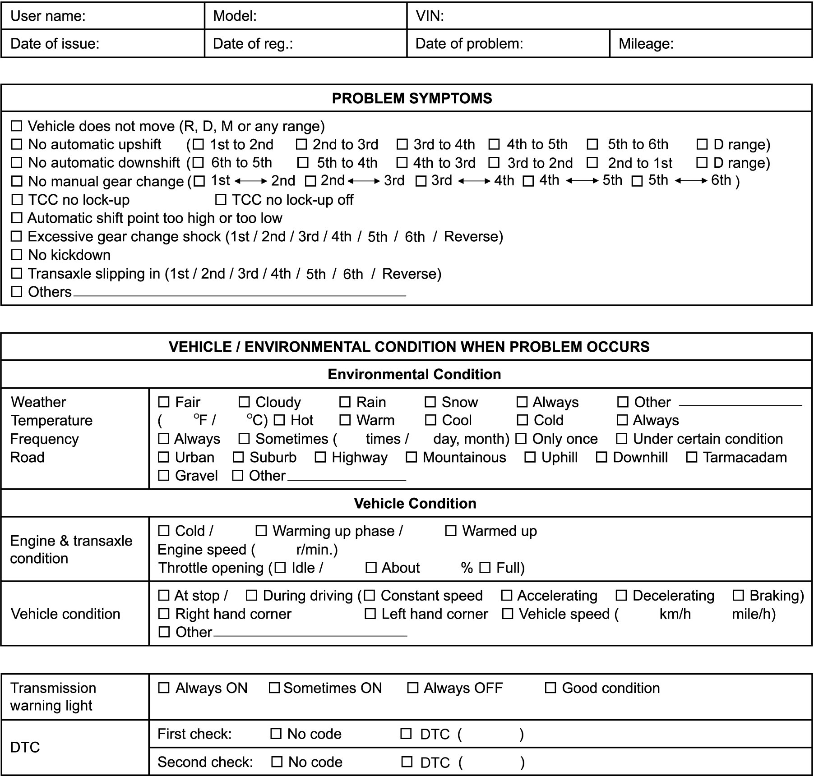

5A
| A/T Control System Check |
Refer to the following items for the details of each step.
| Step | Action | Yes | No |
|---|---|---|---|
| 1 |
Customer complaint analysis
1)Perform customer complaint analysis.
Was customer complaint analysis performed?
|
Go to Step 2.
|
Perform customer complaint analysis.
|
| 2 |
DTC / freeze frame data check, record and clear
1)Check for DTC (current and pending DTC) and freeze frame data.
Is there any DTC(s) / freeze frame data?
|
Print DTC and freeze frame data or write them down and clear them referring to DTC Clearance, and then go to Step 3.
|
Go to Step 4.
|
| 3 |
Visual inspection
1)Perform visual inspection.
Is there any faulty condition?
|
Repair or replace faulty part, and then go to Step 11.
|
Go to Step 5.
|
| 4 |
Visual inspection
1)Perform visual inspection.
Is there any faulty condition?
|
Repair or replace faulty part, and then go to Step 11.
|
Go to Step 8.
|
| 5 |
Trouble symptom confirmation
1)Check trouble symptom.
Is trouble symptom identified?
|
Go to Step 6.
|
Go to Step 7.
|
| 6 |
Recheck and record DTC / freeze frame data
1)Recheck for DTC (current and pending DTC) and freeze frame data.
Is there any DTC(s) / freeze frame data?
|
Go to Step 9.
|
Go to Step 8.
|
| 7 |
Recheck and record DTC / freeze frame data
1)Recheck for DTC (current and pending DTC) and freeze frame data.
Is there any DTC(s) / freeze frame data?
|
Go to Step 9.
|
Go to Step 10.
|
| 8 |
A/T basic check and A/T symptom diagnosis
1)Perform A/T basic check and A/T symptom diagnosis.
Is there any faulty condition?
|
Check and repair faulty part(s), and then go to Step 11.
|
Go to Step 10.
|
| 9 |
Troubleshooting for DTC
1)Perform troubleshooting for applicable DTC.
Are check and repair complete?
|
Go to Step 11.
|
Check and repair faulty part(s), and then go to Step 11.
|
| 10 |
Intermittent problem check
1)Check for intermittent problems.
Is there any faulty condition?
|
Repair or replace faulty part(s), and then go to Step 11.
|
Go to Step 11.
|
| 11 |
Final confirmation test
1)Perform final confirmation test.
Is there any problem symptom, DTC or abnormal condition?
|
Go to Step 6.
|
End.
|
Step 1: Customer Complaint Analysis
Record details of the problem (failure, complaint) and how it occurred as described by the customer.
For this purpose, use of such an inspection form will facilitate collecting information required for proper analysis and diagnosis.
NOTE:
The form is a standard sample. It should be modified according to conditions of each market.
Customer questionnaire form (Example)

 "Expand image")
Step 2: DTC / Freeze Frame Data Check, Record and Clearance
First, check DTC (current and pending DTC). If DTC is indicated, print DTC and freeze frame data or write them down and then clear them. 
Step 3 and 4: Visual Inspection
As a preliminary step, perform visual check of the items that support proper function of engine and A/T.
Step 5: Trouble Symptom Confirmation
In case that there is no DTC at Step 2:
Based on information obtained in Step 1: Customer Complaint Analysis and Step 2: DTC / Freeze Frame Data Check, Record and Clearance, check trouble symptoms.
In case that there is any DTC at Step 2:
Recheck DTC according to “DTC Confirmation Procedure” described in each DTC troubleshooting.
Step 6 and 7: Rechecking and Record of DTC and Freeze Frame Data
Refer to DTC Check for checking procedure.
Step 8: A/T Basic Check and A/T Symptom Diagnosis
1)Perform A/T basic check.
2)In case there is no faulty part found in inspection procedure of “A/T basic inspection”, perform A/T Symptom Diagnosis based on symptom found in vehicle checking in the following items.
•Customer complaint analysis
•Trouble symptom confirmation
•Trouble symptom confirmation
Step 9: Troubleshooting for DTC
Perform applicable DTC troubleshooting and repair or replace faulty parts.
Step 10: Intermittent Problem Check
In case that there is no DTC at Step 2:
Check for intermittent problem.
In case that there is any DTC at Step 2:
Check parts related to detected DTC (e.g. wire harness, connector, etc.).
Step 11: Final Confirmation Test
Check that the problem symptom has gone and the vehicle is free from any abnormal conditions. If what has been repaired is related to DTC, clear DTC once, perform DTC confirmation procedure and check that no DTC is indicated.